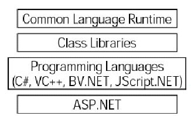
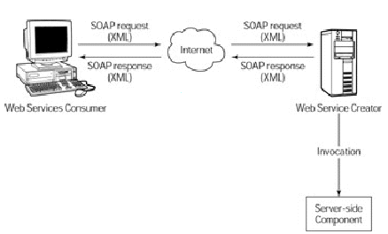

Este módulo define a .Net Framework.
Última revisão: 24/07/2003
Página do projeto: http://tux.lcc.ufrn.br/~iuri/projeto
.Net é uma plataforma de desenvolvimento como Java, ao invés de você compilar um programa diretamente para uma arquitetura de hardware/software, você compila seu programa para uma plataforma (compila em um linguagem intermediária) e a plataforma se encarrega de executá-lo em diferentes arquiteturas de hardware/software (transforma a linguagem intermediária em linguagem entendida pelo computador). Ela garante que seu programa rodará em qualquer arquitetura que entender puder entender linguagem intermediária, isto é, qualquer arquitetura que suporte programas feitos para rodar sobre a plataforma.
A .Net Framework é composta de quatro partes, como mostra a figura abaixo: Common Language Runtime, uma coleção de classes, um conjunto de linguagens de programação e a ASP.NET

A .Net Framework foi projetada com três objetivos em mente. Primeiro, tornar aplicativos mais estáveis, enquanto prover uma aplicação com um grande grau de segurança. Segundo, simplificar o desenvolvimento de aplicativos para a Web e serviços que não operam em equipamentos tradicionais, como em dispositivos móveis. Último, prover um conjunto de bibliotecas que podem ser usadas em múltiplas linguagens, diferente da plataforma Java que atualmente só trabalha com a linguagem Java.
A .Net Framework foi feita para abastecer o desenvolvimento sobre redes(e internet). O combustível para usar no desenvolvimento sobre redes é chamado de Web Services. Vocês pode pensar um Web Service como uma página Web que interage com um programa, ao invés de com pessoas. Um Web Service é uma biblioteca on-line, a aplicação .NET solicita uma função desta biblioteca ao .Net Framework, este chama a biblioteca com um pedido http, (como um Browser de internet), ela então retorna uma página em XML com o resultado, a .Net Framework transforma esta página XML em um tipo suportado pela aplicação. Observe a figura:

Um Web Service permite que aplicações sejam distribuídas pela rede, cada função de um programa pode ser colocada para rodar em um computador diferente, dividindo assim o processamento de uma aplicação. Uma empresa de desenvolvimento de software pode por exemplo ter uma biblioteca sempre atualizada (pois a toda chamada de função, utiliza-se a versão contida no site do fabricante) disponível para seus clientes acessarem via internet. Ou então um site pode prover acesso a banco de dados de informações totalmente comunicável com programas sem precisar gerar novos protocolos, pois todos os serviços se comunicam via protocolo http.